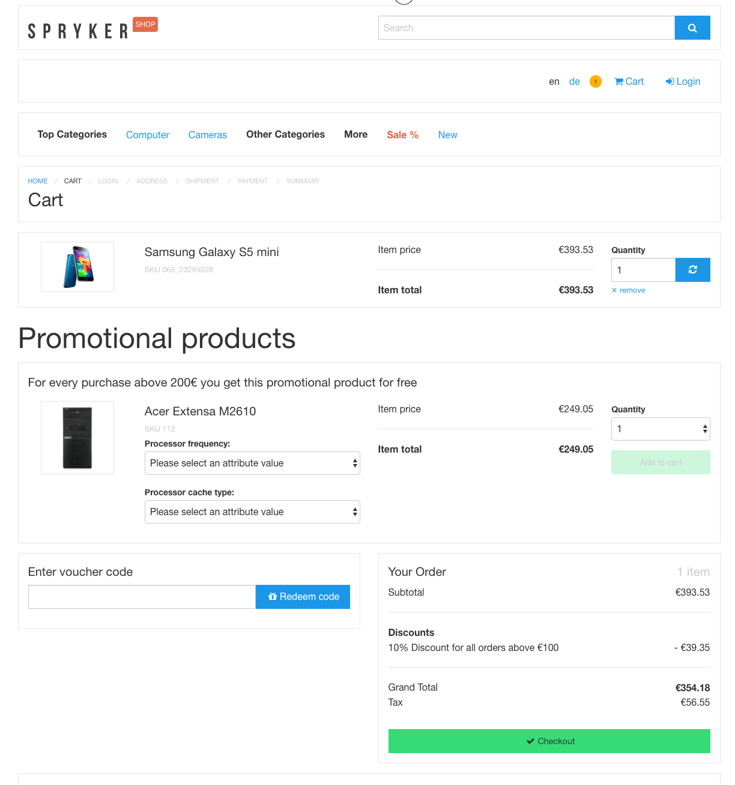
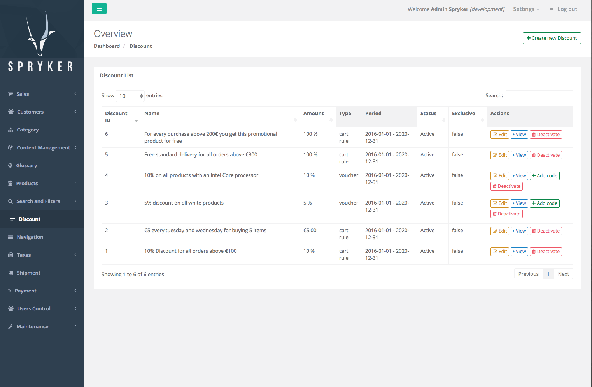
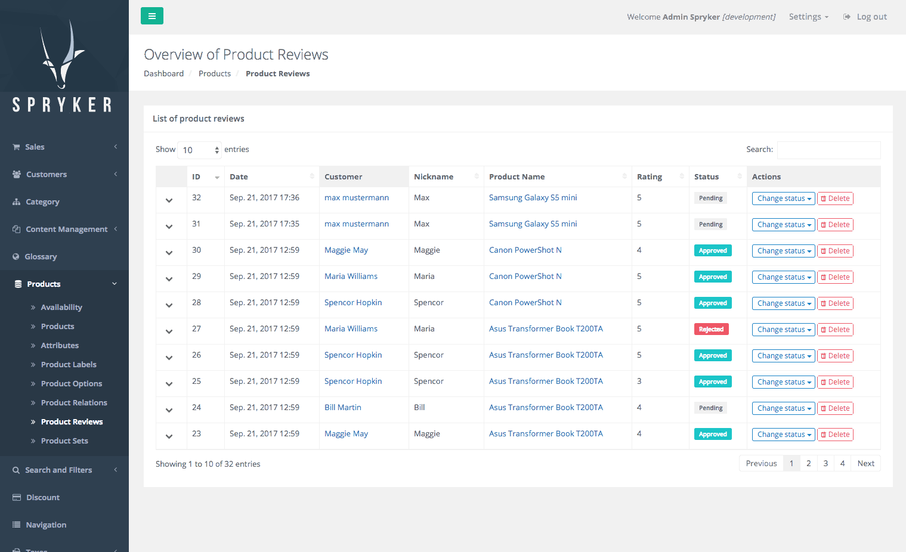

Release Notes - September - 2 2017
- Release Notes - September - 2 2017
- Features
- Discount Promotion Products
- Product Reviews and Ratings
- Multi Currency Infrastructure
- Propel Migration Check Console Command
- Config Profiler
- Improvements
- Product Availability Retrieval Enhancement
- Touch Aware Data Importers to Touch Inactive
- Validator Updates for Transfers
- Navigation Redis Entry Optimization
- Kernel Class Resolver Performance
- Missing Index for Stock Table
- Price Check Query Performance
- Output Execution Time for Importers
- Mget Cache
- Bugfixes
- Allow Null in Setter for Array Properties
- Work with Missing Translations
- Image Set Name Validation
- Default Behavior for Propel Adjustments Command
- Dependency Injector Resolver
- Documentation Updates
Features
Discount Promotion Products
For marketing reasons you, the shop owner, might sometimes give away free or discounted products. This can happen depending on the cart content or via a redeemed voucher code. With this release we are introducing discount promotions fully integrated in out discount engine. Now you can easily give away free perks for example when the cart value reaches to a certain threshold. Or for example when the customer buys certain product you can give away for free or with a reduced price a complimentary product. Some of the most common use cases for this feature are "buy one, get one for free", "buy product X, get product Y for free", "buy 10 of product X and get 1 of product X for free". All this is now possible with our discount promotions.


Affected Modules
| Major | Minor | Patch |
|---|---|---|
| - DiscountPromotion 1.0.0 | - Discount 4.5.0 | - Availability 5.0.3 - DiscountPromotion 1.0.1 |
Documentation
For module documentation see: Discount Module Guide, Extending the Discount Module, Discount Promotions.
Migration Guides
To upgrade, follow the steps described below:
- Apply every minor and patch:
composer update "spryker/*"- Once that is done, upgrade to the new module major and its dependencies:
composer require spryker/discount-promotion:"^1.0.0"Product Reviews and Ratings
With this release we are introducing product reviews and ratings. Reviews are a powerful marketing tool for your online store. There are various reasons why you might want to have this feature. Customer created content generates considerable amount of sales uplift by influencing your buyers decision making. A positive feedback from another buyer builds trust and increases the chances for the sale. In addition to that, product reviews can also positively affect your site’s organic search ranking in search engines, as this content increases the amount of overall unique content.
The product review feature allows to submit product reviews and ratings in the shop application. We also ship this feature with a dedicated Zed admin user interface which allows the store manager to review submitted content, approve, reject, or delete reviews. The approved reviews, ratings, and assembled data can be displayed on demand in your shop for the products as well as those can be used for catalog filtering and/or sorting.
With this feature we have also introduced an improvement to the search engine. Now the search is capable of storing and reading data divided in different types and indexes. Besides, the data tables are now capable of using additional data in presentation than defined in their headers.

Affected Modules
| Major | Minor | Patch |
|---|---|---|
| - ProductReview 1.0.0 - ProductReviewCollector 1.0.0 - ProductReviewGui 1.0.0 |
- Collector 5.5.0 - Gui 3.9.0 |
n/a |
Documentation
For documentation see: Under the Hood - Product Reviews, Product Reviews Feature Configuration, Filter and Sort by Average Rating.
For feature integration see: Feature Integration - Product Reviews.
Migration Guides
To upgrade, follow the steps described below:
- Apply every minor and patch:
composer update "spryker/*"- Once that is done, upgrade to the new module major and its dependencies:
composer require spryker/product-review:"^1.0.0" spryker/product-review-collector:"^1.0.0" spryker/product-review-gui:"^1.0.0"Multi Currency Infrastructure
We are currently working on full enablement of multi-store and multi-currency concepts. With this release we introduce infrastructure to support those feature. In consequent releases we will be step-by-step enabling every relevant functionality with multi-store and -currency.
Affected Modules
| Major | Minor | Patch |
|---|---|---|
| - Currency 3.0.0 - Store 1.0.0 |
- Kernel 3.7.0 - Money 2.1.0 - ZedRequest 3.2.0 |
- Braintree 0.5.5 - ProductManagement 0.8.2 - Kernel 3.7.2 |
Documentation
For detailed migration guides see: Currency Module Migration Guide from Version 2. to 3..
Migration Guides
To upgrade, follow the steps described below:
- Apply every minor and patch:
composer update "spryker/*"- Once that is done, upgrade to the new module major and its dependencies:
composer require spryker/currency:"^3.0.0" spryker/store:"^1.0.0"Propel Migration Check Console Command
We have added a new console propel:migration:check MigrationCheckConsole command to get a unified output for Propel's status command. This check can be used, for example, to find out if a maintenance page needs to be shown during deployment or not. Scripts can check for the return code 0 (all good) vs. 2 (migration needed).
The command is auto-added to ConsoleDependencyProvider when pulling this new minor.
Affected Modules
| Major | Minor | Patch |
|---|---|---|
| n/a | - Propel 3.2.0 | n/a |
Config Profiler
We have added a new WebProfiler Panel which shows all used Spryker configurations. To enable the ConfigProfiler you need to add it to your ConsoleDependencyProvider and enable it in your required environments by setting $config[ConfigConstants::ENABLE_WEB_PROFILER] to true.
Affected Modules
| Major | Minor | Patch |
|---|---|---|
| n/a | - Config 3.1.0 | - Twig 3.2.2 |
Improvements
Product Availability Retrieval Enhancement
This release adds a new method to Availability Client which returns the product availability or null when it does not exist in Storage. The "getter" method of Availability Client now throws custom exception instead of generic one.
Affected Modules
| Major | Minor | Patch |
|---|---|---|
| n/a | - Availability 5.1.0 | n/a |
Touch Aware Data Importers to Touch Inactive
Previously it was only possible to add touch items active during the DataImport. With this change it is now possible to also touch inactive and deleted.
Affected Modules
| Major | Minor | Patch |
|---|---|---|
| n/a | - DataImport 1.2.0 |
Validator Updates for Transfers
We have adjusted the TransferValidator to take the new simple array definitions into account. This also unifies normal array type to "array", "[]" issues a warning. Please run console transfer:validate in their CI to assert if only valid transfer definitions are added.
Affected Modules
| Major | Minor | Patch |
|---|---|---|
| n/a | n/a | - CmsBlockCategoryConnector 2.0.4 - CmsBlockProductConnector 1.0.3 - ProductOptionCartConnector 4.1.2 - Ratepay 0.6.3 - Transfer 3.3.5 |
Navigation Redis Entry Optimization
The Redis entry for Main Navigation contained unneeded data for all navigation nodes, causing a big Redis entry. In a production environment, this Redis entry would take more time to fetch especially in a distributed setup as the latency would be even higher. This improvement cleans up the Navigation entry in Redis from all the unneeded data and improves the performance for loading the navigation.
Affected Modules
| Major | Minor | Patch |
|---|---|---|
| n/a | n/a | - NavigationCollector 1.0.2 |
Kernel Class Resolver Performance
Previously each call to canResolve() was building a possible class name and checking if that class exists. With this improvement we added a cache that stores the already resolved class names to make sure that the entire resolving roundtrip is not done over and over again.
Affected Modules
| Major | Minor | Patch |
|---|---|---|
| n/a | - Kernel 3.6.0 - Testify 3.3.0 |
n/a |
Missing Index for Stock Table
Concrete product collector has been slow because of a missing index. A missing index has been added now to increase the performance.
Affected Modules
| Major | Minor | Patch |
|---|---|---|
| n/a | n/a | - Stock 4.0.6 |
Price Check Query Performance
To improve price check query performance, we have removed the count to make query faster.
Affected Modules
| Major | Minor | Patch |
|---|---|---|
| n/a | n/a | - Price 4.2.2 |
Output Execution Time for Importers
With this release we are introducing output time taken in data:import commands. The time in milliseconds has been added to DataImporterReportTransfer.
Affected Modules
| Major | Minor | Patch |
|---|---|---|
| n/a | - DataImport 1.1.0 | n/a |
Mget Cache
StorageClient implements internal cache mechanism for "get" method: all "get" requests will be combined in one initial "get" and a single "multiGet". Previously it was missing for direct "multiGet" call. Since this release "get" and "multiGet" use the same cache bag and mechanism.
Affected Modules
| Major | Minor | Patch |
|---|---|---|
| n/a | - Storage 3.3.0 | n/a |
Bugfixes
Allow Null in Setter for Array Properties
Previously for a property with type array it was not possible to reset it with null anymore. This update will restore this deprecated but formerly working behavior as part of a regression fix. Please migrate your code to use a true [] for resetting.
Affected Modules
| Major | Minor | Patch |
|---|---|---|
| n/a | n/a | - Transfer 3.3.6 |
Work with Missing Translations
Previously the "translation key exists" check considered all translation keys regardless of the selected locale, but "translation retrieval" retrieved translations from current locale only. This was causing an error in case if the translation existed in the non-current locale. We have fixed this issue now. The translate methods now work on the selected locale's translation key set.
Affected Modules
| Major | Minor | Patch |
|---|---|---|
| n/a | n/a | - Glossary 3.1.8 |
Image Set Name Validation
Previously when something wrong was entered in the image set key, the search collector was failing with an error. We have fixed this issue now. Image set name is validated before saving.
Affected Modules
| Major | Minor | Patch |
|---|---|---|
| n/a | n/a | - ProductSetGui 1.1.1 |
Default Behavior for Propel Adjustments Command
By default in projects, a command for Propel adjustments for PostgreSQL was running for project and all Spryker modules. Now by default we run it only for project schema files.
Affected Modules
| Major | Minor | Patch |
|---|---|---|
| n/a | - Propel 3.1.0 | n/a |
Dependency Injector Resolver
A previous release broke the DependencyInjectorResolver. This release is to fix that issue.
Affected Modules
| Major | Minor | Patch |
|---|---|---|
| n/a | n/a | - Kernel 3.7.1 |
Documentation Updates
The following content has been added to the Academy: